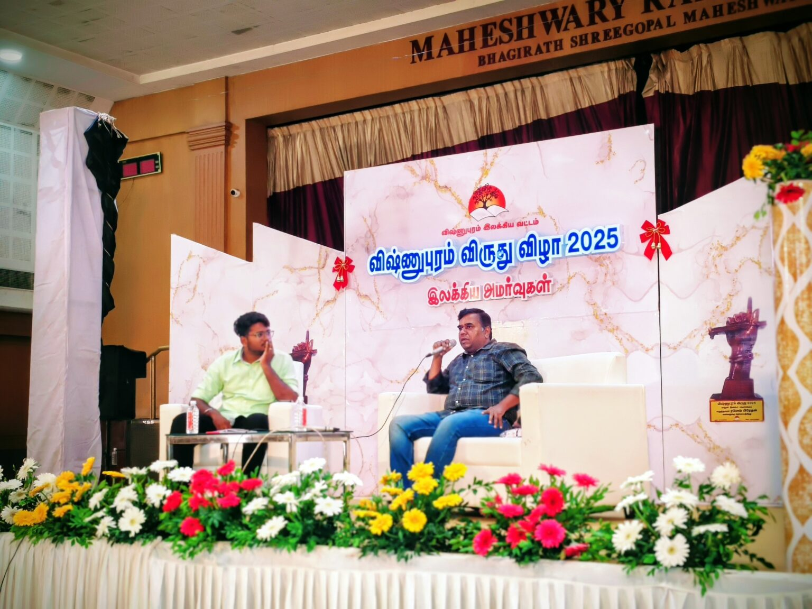
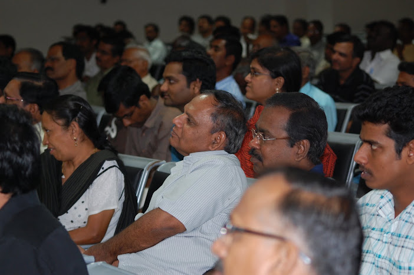
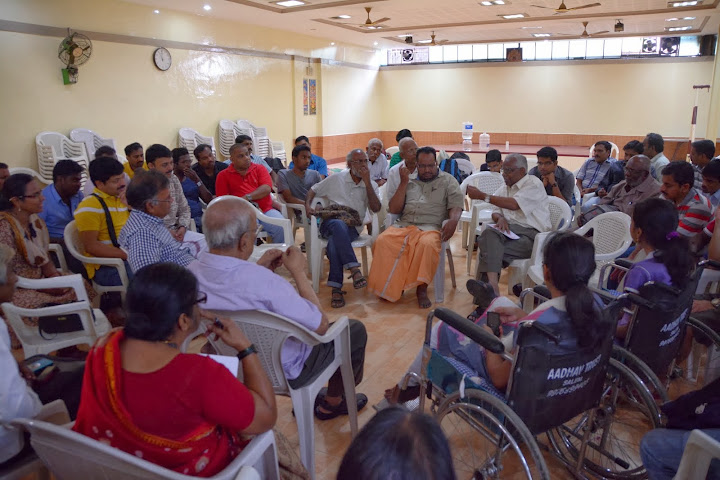
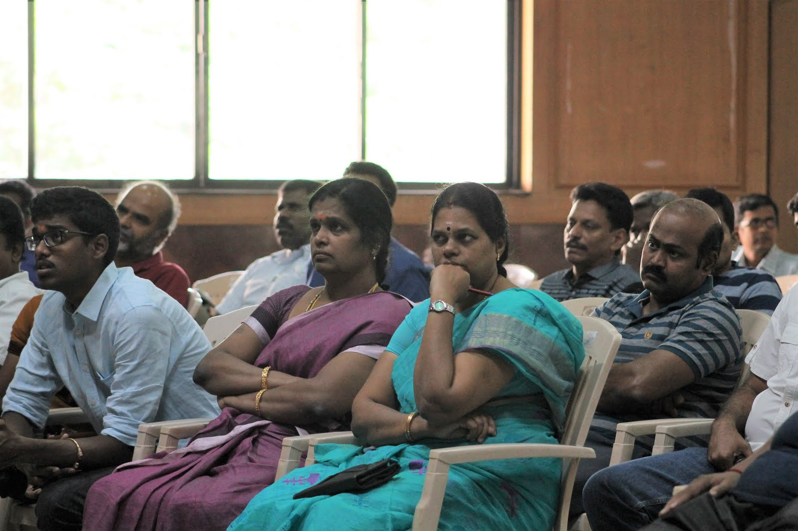
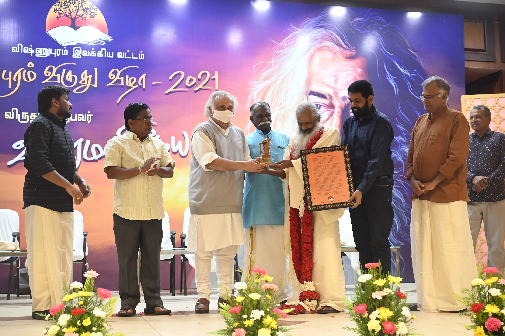
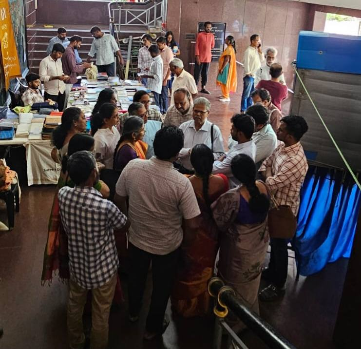

Living Tamil Association for World Literature (LTAWL)
The history of honouring Tamil writers, year by year, from the first ceremony in 2010 through 2025 — the readers' movement that grew into the Living Tamil Association for World Literature (LTAWL).
Every December since 2010, the Vishnupuram Literary Circle has gathered in Coimbatore to honour a distinguished Tamil writer with its annual literary award — a citation, a purse and a sculpture, presented before a hall of readers rather than a jury alone. Writer Ra. Murugan was named laureate in 2024, the most recent year with a single named recipient; the 2025 edition widened into a multi-day festival of readings, translations and discussion recognising many writers at once, ahead of the first Living Tamil LitFest held in New York in April 2026.






